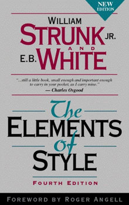

How to improve your writing skills?
Often, when students ask me this question, they are not asking me for the conventional wisdom. They are neither asking me for a class on English. Yet, let me touch briefly upon these points before explaining that beautiful secret of amazing writing.
Well, generations after generations, some wisdom has been passed over on how to improve our writing skills. I mention some that apply to essay writing kind of tasks. Start by writing what you wish to write about. Then, inspire your reader with few points on why it is important. Keep your writing coherent. Ensure that there is a story flowing through nicely. Finally, say what you wanted to say. Summarize the key points. I have received these tips from many great writers. I have passed it over to hundreds of students. People see a sense in these, but are rarely ever impressed.
 On another note, linguistic skills certainly play a role in writing. To improve your English skills, there can't be a better book than "The Elements of Style"! This tiny little book packs so much of information such as the rules to hyphenate, shall vs.will usage, and so on. The author claims that vigorous writing is concise. A sentence should contain no unnecessary words. A paragraph should contain no unnecessary sentences and a story should have no unnecessary paragraphs. Author takes the analogy of drawing to writing. We must maintain the aesthetics of our writing as well. For example, "this is a subject which deals with student matters" can be written as "this subject deals with student matters". Many amateur writings jump between present and past tenses. Author recommends present tense for summaries. This is a book to own, not for just a single reading. Everyday, read a bit, and practice it consciously throughout the week. You will be a much better writer.
There are hundreds of writers out in the wild. They have heard the conventional wisdom. They have read the elements of style. Yet, the magic seems to be missing from their writing. If I may take another analogy, millions of us have heard about hitting a sixer (in cricket). We have seen Tendulkar play. We have the knowledge. We lack the skills. Practice is a natural answer. Remember, practicing wrong things can only compound our problems. So, the question still remains, "How to improve our writing skills?".
 We all have some priced possessions. For Tendulkar, it might be his bat. For Anand, it might be his notes on chess wisdom. For me, it is my laptop. For many great writers, it is their pen. I suggested that the student should buy the best pen he could afford. Of late, I use a Parker. Make it a priced possession. Every word coming out of it must supply pleasure and pride to you. I have a notebook with 70 GSM paper quality. I keep red and green pens handy. This allows me to be creative in my writing. Every lecture I attend is an opportunity to use my arsenal. I enjoy taking notes as I can use my pen and notebook. Every word I write is an art worth treasuring. I am a lenovo user for the past 10+ years. A major reason to buy Lenovo laptops is the great keyboards they carry. I feel privileged to type anything on that laptop. This sense of pride brings the best out of us. And that provides the necessary break out to the next level in writing. I may not be the best, but I love writing.
We all have some priced possessions. For Tendulkar, it might be his bat. For Anand, it might be his notes on chess wisdom. For me, it is my laptop. For many great writers, it is their pen. I suggested that the student should buy the best pen he could afford. Of late, I use a Parker. Make it a priced possession. Every word coming out of it must supply pleasure and pride to you. I have a notebook with 70 GSM paper quality. I keep red and green pens handy. This allows me to be creative in my writing. Every lecture I attend is an opportunity to use my arsenal. I enjoy taking notes as I can use my pen and notebook. Every word I write is an art worth treasuring. I am a lenovo user for the past 10+ years. A major reason to buy Lenovo laptops is the great keyboards they carry. I feel privileged to type anything on that laptop. This sense of pride brings the best out of us. And that provides the necessary break out to the next level in writing. I may not be the best, but I love writing.
In summary, I believe that the wisdom is available in abundance. We all can figure out the good and the bad of writing withing a few mouse clicks. Practice without sufficient conscious oversight might have a counter effect. In other words, writing a lot does not improve your writing. Writing is like playing chess. I have played more than 20000 recorded games of chess. However, during my formative days, I did not apply correct principles. Hence, my chess ratings did not improve. The secret lies in the word "principles". The secret is to understand the principles behind good writing. The secret is to practice the principles of good writing. Let us take "conciseness" as an example for the principles of good writing. Go to the internet, or read the elements of style. Understand through several examples. Then, consciously apply this principle for a week or more. Once you feel confident, read more principles and repeat. It may seem to be a slow process initially. But, you will be surprised to see your skills compounding pretty soon! Your eyes will soon distinguish writings that are beautiful from the rest of the cloud. Some day, your writing will have sufficient elegance that you will feel like re-reading your own piece of work. That day, you have mastered the art of writing! Good luck.